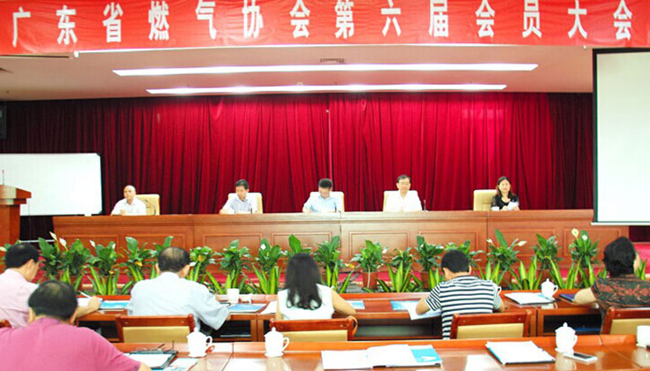

广东省燃气协会第六届第一次会员大会顺利召开
2015-08-16近日，广东省燃气协会在武警广东总队天鹿湖会议中心召开了第六届会员大会，来自全省主要燃气经营企业和地市燃气协会共80个会员单位代表出席了会议，省住建厅城建处曹乐根副处长莅临指导。会议审议通过了第五届理事会工作报告、财务报告及监事报告，并选举出第六届理事会成员单位及会长、副会长单位。通过无记名投票选举，广州燃气集团得到各会员单位的肯定与支持，再次高票当选广东省燃气协会会长单位，广州燃气集团乔武康总经理连任广东省燃气协会会长。
选举结束后，乔武康会长代表新一届理事会在会上发言，对政府相关部门的关心和指导，以及全体会员、各理事单位的信任与支持表示衷心的感谢，并表示将竭尽全力与省内同行一道积极推动协会各项工作，努力促进协会事业再上新台阶。对于新一届协会的工作，乔会长指出要围绕政府部门关注的“安全管理、能源保障、环境保护”三个方面开展，重点关注燃气应用领域的拓展，特别是在天然气发电、天然气能源站建设、天然气加气站建设以及工业锅炉改造等方面，切实为燃气经营企业提供更加专业的服务与支持，在协会工作中不断创新服务模式、完善服务功能、丰富服务内容，将协会建设提升到一个新的水平，进一步协调和指导燃气行业经营活动，为燃气企业发展提供更大的平台，为全省燃气事业的发展作出新的贡献。
随后，曹乐根副处长讲话，他高度肯定了省燃气协会所做的工作和贡献，并对新一届协会工作提出具体要求，强调协会工作要在做好政府与企业沟通的桥梁、善于抓住行业难点热点问题、带领会员单位履行好社会责任、加强协会自身建设等四个方面扮演好角色，发挥好作用。最后，曹乐根副处长希望全体会员单位要继续积极支持协会工作，共同肩负起全省燃气安各尽其职、各尽所能，为全省燃气事业发展做出更大的贡献！
 上一篇：新疆首个煤制油项目审批通过 煤制油发展不会停滞下一篇：威远生化更名新奥生态控股 转型升级


 400-028-3388
400-028-3388